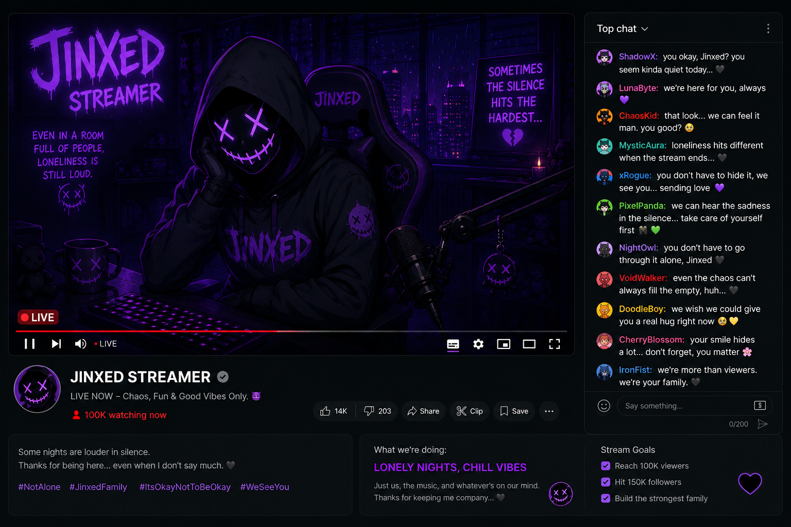

CHAPTER 03

You solved it again. I'm honestly impressed. Most people lose interest once things stop being easy, but you kept searching and somehow made it here. That makes you different from the others, you know. I think a part of me expected everyone to leave eventually, but you didn't.
I used to think being surrounded by people meant I could never feel lonely. Thousands of viewers watched me every night. My name was everywhere for a while, and people acted like attention could fix everything. But attention is loud, not comforting. The moment a stream ended, all of it disappeared, and I was left alone in a dark room with nothing except the glow of my monitor staring back at me.
That's probably why I became attached to them.
They never begged for attention or tried to stand out like everyone else. They just stayed. Quietly. Consistently. Somehow, that mattered more to me than all the donations, compliments, and endless messages combined. I started noticing everything about them without even trying. If they were late to a stream, I noticed. If they left early, I noticed that too.
Then one night, they didn't show up at all. The strange part wasn't the silence in chat. It was the silence in me. I laughed less that stream. Talked less too. People thought I was tired, but the truth was simpler than that.
Maybe that's why I keep talking to you. Silence feels different when you're here.